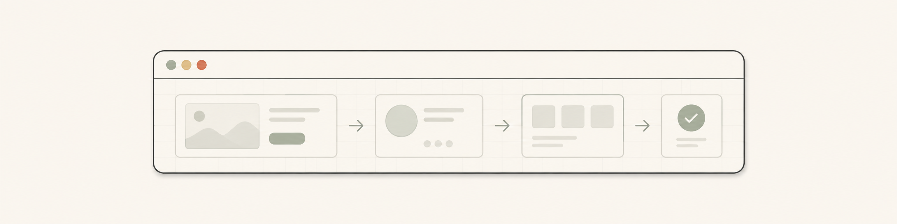
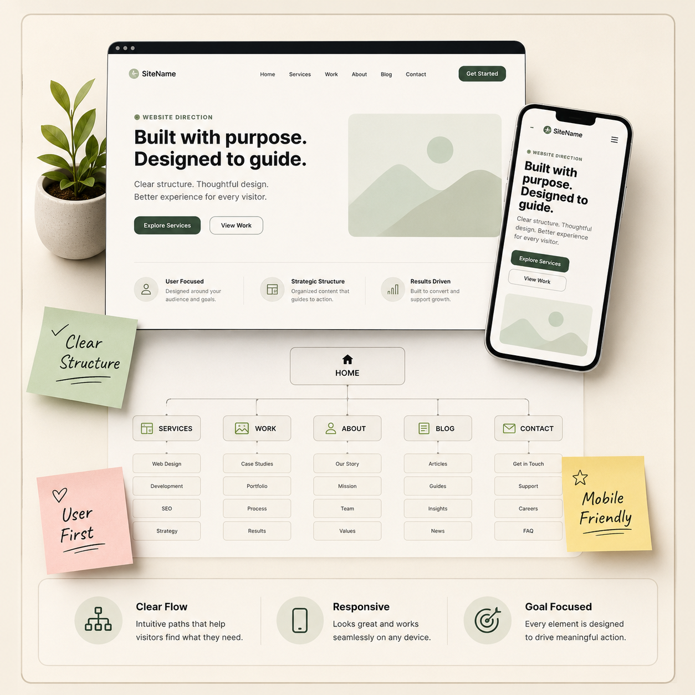
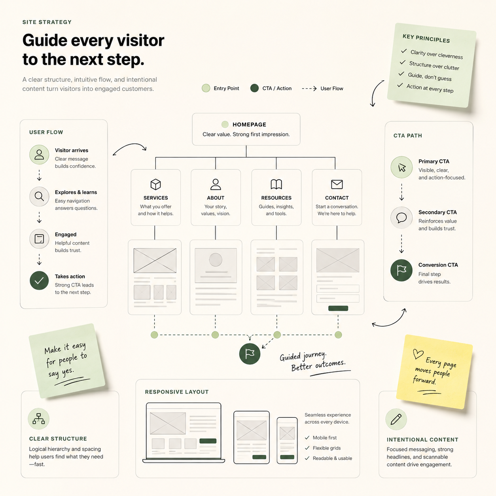
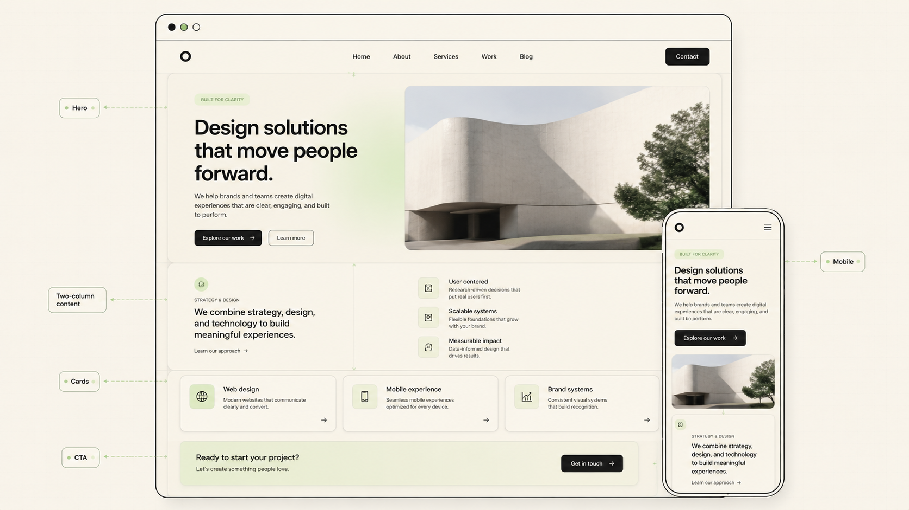
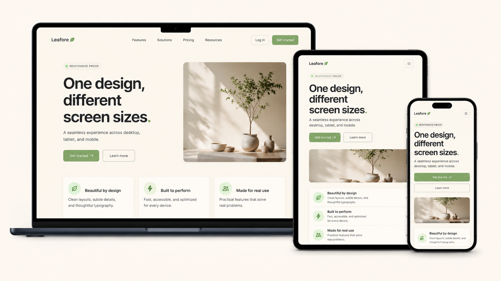

Landing Pages
Focused pages for one offer, one message, and one clear action.
Web Development Service
I build responsive websites, landing pages, portfolio pages, and service pages for small businesses and personal brands with clear structure, strong first-screen direction, mobile-first spacing, and content that helps visitors take action.

What I Build
Focused pages for one offer, one message, and one clear action.
Personal websites that show your work, skills, projects, and contact path.
Pages that explain what you do without making visitors read too much.
Layouts that work on mobile, tablet, laptop, and larger screens.
Clean headings, meta tags, readable sections, and search-friendly basics.
Contact forms, quote sections, booking buttons, and simple visitor actions.

Visual Proof
Use this section for a homepage preview, mobile view, before-after screenshot, speed report, or real project capture. Visitors trust faster when they can see the result.

Website Direction
A good website should feel simple from the first second. The page structure, spacing, buttons, text, and visuals should guide visitors toward the next step.
Page Preview
A website feels more real when visitors can see the page direction, section spacing, mobile view, and first-screen structure. This area is for one polished screenshot or mockup of the website style.

Responsive Proof
Use this section to show desktop, tablet, and mobile previews together. This tells people the website is not only pretty on one screen, but planned for real use.

Process
Define the goal, sections, content, and what visitors should do.
Create the layout direction, spacing, visual rules, and responsive structure.
Code the page with clean HTML, CSS, JavaScript, and mobile support.
Fix spacing, speed, SEO tags, forms, buttons, and final details.
Pricing Preview
Short version only. Open the full pricing page for the complete package details, notes, and payment direction.
Best for landing pages, portfolio pages, or simple service pages.
View DetailsBest for ongoing updates, fixes, small improvements, and support.
View DetailsBest when the site needs more pages, custom sections, or cleanup.
View DetailsSchedule / Chat
Share your idea, current website, target audience, and the main action you want visitors to take. I can help shape it into a clean web build.
Let's Get Started
Keep this form or connect it later to Google Forms, Notion, Sheets, Formspree, or your own backend.